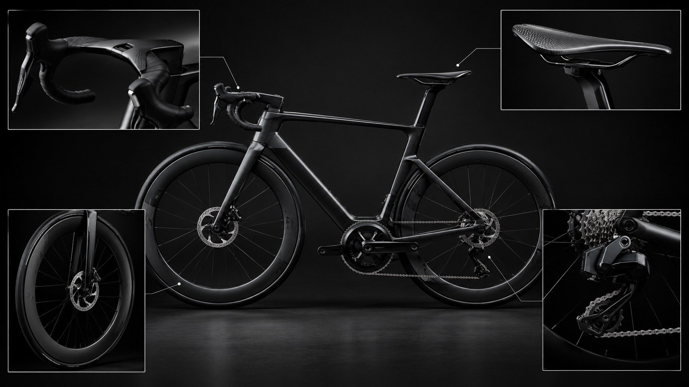

1. [Guidão Cockpit Integrado]
Reduz a resistência do ar e melhora a aerodinâmica.
2. [Selim de Fibra de Carbono]
Leve e resistente, oferece suporte ao ciclista.
3. [Movimento Central do Quadro]
Permite a rotação dos pedais e transmite força à corrente.
4. [Roda Dianteira de Perfil Alto]
Melhora a aerodinâmica e o desempenho em alta velocidade.
5. [Câmbio Eletrônico Traseiro]
Realiza trocas de marchas rápidas e precisas.